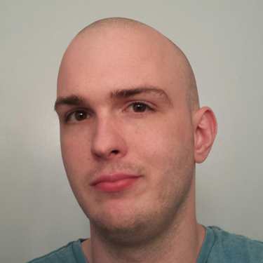

 Hi. I'm Ryan. I started web development on my grandma's Sony Vaio back in 1998. My first site was a collection of random Pokemon pictures with equally random sizing. It was glorious. Then I took a 15 year hiatus from web development, but here we are.
Nowadays, I find myself constantly looking at different types of web design, keeping current with modern trends and, at the same time, appreciating the innovation of others. On top of that, I enjoy picking up concepts from other developers and then implementing them in what I do from scratch. I find this to be the best method for strengthening my skills and producing work I am truely proud of.
My goal is to become one of the best front end developers, period. I don't plan on ever slowing down when it comes to learning new technologies, languages, and trends. On a lesser note, I want to become a competent artist one day, capable of creating more than my current stick figures in MS Paint.